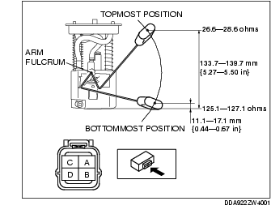

1. Move the float to the topmost and bottommost positions, and verify that the resistance between terminals A and C of the fuel gauge sender unit and the position of the float are as shown in the figure.

• If they are not as shown in the figure, replace the fuel pump.